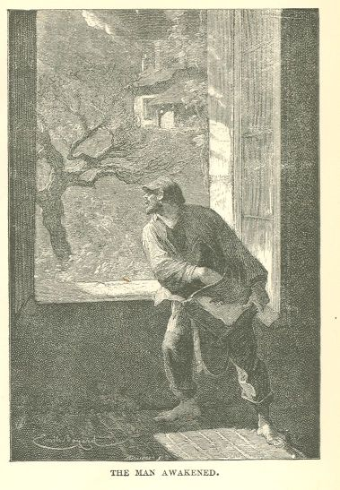

Les Misérables

It was because,—strange phenomenon, and one which was possible only in the situation
in which he found himself,—in stealing the money from that child, he had done a thing
of which he was no longer capable.
However that may be, this last evil action had a decisive effect on him; it abruptly
traversed that chaos which he bore in his mind, and dispersed it, placed on one side
the thick obscurity, and on the other the light, and acted on his soul, in the state
in which it then was, as certain chemical reagents act upon a troubled mixture by
precipitating one element and clarifying the other.
First of all, even before examining himself and reflecting, all bewildered, like one
who seeks to save himself, he tried to find the child in order to return his money
to him; then, when he recognized the fact that this was impossible, he halted in despair.
At the moment when he exclaimed "I am a wretch!" he had just perceived what he was,
and he was already separated from himself to such a degree, that he seemed to himself
to be no longer anything more than a phantom, and as if he had, there before him,
in flesh and blood, the hideous galley-convict, Jean Valjean, cudgel in hand, his
blouse on his hips, his knapsack filled with stolen objects on his back, with his
resolute and gloomy visage, with his thoughts filled with abominable projects.
Excess of unhappiness had, as we have remarked, made him in some sort a visionary.
This, then, was in the nature of a vision. He actually saw that Jean Valjean, that
sinister face, before him. He had almost reached the point of asking himself who that
man was, and he was horrified by him.
His brain was going through one of those violent and yet perfectly calm moments in
which revery is so profound that it absorbs reality. One no longer beholds the object
which one has before one, and one sees, as though apart from one's self, the figures
which one has in one's own mind.
Thus he contemplated himself, so to speak, face to face, and at the same time, athwart
this hallucination, he perceived in a mysterious depth a sort of light which he at
first took for a torch. On scrutinizing this light which appeared to his conscience
with more attention, he recognized the fact that it possessed a human form and that
this torch was the Bishop.
His conscience weighed in turn these two men thus placed before it,—the Bishop and
Jean Valjean. Nothing less than the first was required to soften the second. By one
of those singular effects, which are peculiar to this sort of ecstasies, in proportion
as his revery continued, as the Bishop grew great and resplendent in his eyes, so
did Jean Valjean grow less and vanish. After a certain time he was no longer anything
more than a shade. All at once he disappeared. The Bishop alone remained; he filled
the whole soul of this wretched man with a magnificent radiance.
Jean Valjean wept for a long time. He wept burning tears, he sobbed with more weakness
than a woman, with more fright than a child.
As he wept, daylight penetrated more and more clearly into his soul; an extraordinary
light; a light at once ravishing and terrible. His past life, his first fault, his
long expiation, his external brutishness, his internal hardness, his dismissal to
liberty, rejoicing in manifold plans of vengeance, what had happened to him at the
Bishop's, the last thing that he had done, that theft of forty sous from a child,
a crime all the more cowardly, and all the more monstrous since it had come after
the Bishop's pardon,—all this recurred to his mind and appeared clearly to him, but
with a clearness which he had never hitherto witnessed. He examined his life, and
it seemed horrible to him; his soul, and it seemed frightful to him. In the meantime
a gentle light rested over this life and this soul. It seemed to him that he beheld
Satan by the light of Paradise.
How many hours did he weep thus? What did he do after he had wept? Whither did he
go! No one ever knew. The only thing which seems to be authenticated is that that
same night the carrier who served Grenoble at that epoch, and who arrived at D—— about
three o'clock in the morning, saw, as he traversed the street in which the Bishop's
residence was situated, a man in the attitude of prayer, kneeling on the pavement
in the shadow, in front of the door of Monseigneur Welcome.
BOOK THIRD.—IN THE YEAR 1817
CHAPTER I—THE YEAR 1817
1817 is the year which Louis XVIII., with a certain royal assurance which was not
wanting in pride, entitled the twenty-second of his reign. It is the year in which
M. Bruguiere de Sorsum was celebrated. All the hairdressers' shops, hoping for powder
and the return of the royal bird, were besmeared with azure and decked with fleurs-de-lys.
It was the candid time at which Count Lynch sat every Sunday as church-warden in the
church-warden's pew of Saint-Germain-des-Pres, in his costume of a peer of France,
with his red ribbon and his long nose and the majesty of profile peculiar to a man
who has performed a brilliant action. The brilliant action performed by M. Lynch was
this: being mayor of Bordeaux, on the 12th of March, 1814, he had surrendered the
city a little too promptly to M. the Duke d'Angoulême. Hence his peerage. In 1817
fashion swallowed up little boys of from four to six years of age in vast caps of
morocco leather with ear-tabs resembling Esquimaux mitres. The French army was dressed
in white, after the mode of the Austrian; the regiments were called legions; instead
of numbers they bore the names of departments; Napoleon was at St. Helena; and since
England refused him green cloth, he was having his old coats turned. In 1817 Pelligrini
sang; Mademoiselle Bigottini danced; Potier reigned; Odry did not yet exist. Madame
Saqui had succeeded to Forioso. There were still Prussians in France. M. Delalot was
a personage. Legitimacy had just asserted itself by cutting off the hand, then the
head, of Pleignier, of Carbonneau, and of Tolleron. The Prince de Talleyrand, grand
chamberlain, and the Abbé Louis, appointed minister of finance, laughed as they looked
at each other, with the laugh of the two augurs; both of them had celebrated, on the
14th of July, 1790, the mass of federation in the Champ de Mars; Talleyrand had said
it as bishop, Louis had served it in the capacity of deacon. In 1817, in the side-alleys
of this same Champ de Mars, two great cylinders of wood might have been seen lying
in the rain, rotting amid the grass, painted blue, with traces of eagles and bees,
from which the gilding was falling. These were the columns which two years before
had upheld the Emperor's platform in the Champ de Mai. They were blackened here and
there with the scorches of the bivouac of Austrians encamped near Gros-Caillou. Two
or three of these columns had disappeared in these bivouac fires, and had warmed the
large hands of the Imperial troops. The Field of May had this remarkable point: that
it had been held in the month of June and in the Field of March (Mars). In this year,
1817, two things were popular: the Voltaire-Touquet and the snuff-box a la Charter.
The most recent Parisian sensation was the crime of Dautun, who had thrown his brother's
head into the fountain of the Flower-Market.
They had begun to feel anxious at the Naval Department, on account of the lack of
news from that fatal frigate, The Medusa, which was destined to cover Chaumareix with
infamy and Gericault with glory. Colonel Selves was going to Egypt to become Soliman-Pasha.
The palace of Thermes, in the Rue de La Harpe, served as a shop for a cooper. On the
platform of the octagonal tower of the Hotel de Cluny, the little shed of boards,
which had served as an observatory to Messier, the naval astronomer under Louis XVI.,
was still to be seen. The Duchesse de Duras read to three or four friends her unpublished
Ourika, in her boudoir furnished by X. in sky-blue satin. The N's were scratched off
the Louvre. The bridge of Austerlitz had abdicated, and was entitled the bridge of
the King's Garden [du Jardin du Roi], a double enigma, which disguised the bridge
of Austerlitz and the Jardin des Plantes at one stroke. Louis XVIII., much preoccupied
while annotating Horace with the corner of his finger-nail, heroes who have become
emperors, and makers of wooden shoes who have become dauphins, had two anxieties,—Napoleon
and Mathurin Bruneau. The French Academy had given for its prize subject, The Happiness
procured through Study. M. Bellart was officially eloquent. In his shadow could be
seen germinating that future advocate-general of Broe, dedicated to the sarcasms of
Paul-Louis Courier. There was a false Chateaubriand, named Marchangy, in the interim,
until there should be a false Marchangy, named d'Arlincourt. Claire d'Albe and Malek-Adel
were masterpieces; Madame Cottin was proclaimed the chief writer of the epoch. The
Institute had the academician, Napoleon Bonaparte, stricken from its list of members.
A royal ordinance erected Angoulême into a naval school; for the Duc d'Angoulême,
being lord high admiral, it was evident that the city of Angoulême had all the qualities
of a seaport; otherwise the monarchical principle would have received a wound. In
the Council of Ministers the question was agitated whether vignettes representing
slack-rope performances, which adorned Franconi's advertising posters, and which attracted
throngs of street urchins, should be tolerated. M. Paer, the author of Agnese, a good
sort of fellow, with a square face and a wart on his cheek, directed the little private
concerts of the Marquise de Sasenaye in the Rue Ville l'Eveque. All the young girls
were singing the Hermit of Saint-Avelle, with words by Edmond Geraud. The Yellow Dwarf
was transferred into Mirror. The Cafe Lemblin stood up for the Emperor, against the
Cafe Valois, which upheld the Bourbons. The Duc de Berri, already surveyed from the
shadow by Louvel, had just been married to a princess of Sicily. Madame de Stael had
died a year previously. The body-guard hissed Mademoiselle Mars. The grand newspapers
were all very small. Their form was restricted, but their liberty was great. The Constitutionnel
was constitutional. La Minerve called Chateaubriand Chateaubriant. That t made the
good middle-class people laugh heartily at the expense of the great writer. In journals
which sold themselves, prostituted journalists, insulted the exiles of 1815. David
had no longer any talent, Arnault had no longer any wit, Carnot was no longer honest,
Soult had won no battles; it is true that Napoleon had no longer any genius. No one
is ignorant of the fact that letters sent to an exile by post very rarely reached
him, as the police made it their religious duty to intercept them. This is no new
fact; Descartes complained of it in his exile. Now David, having, in a Belgian publication,
shown some displeasure at not receiving letters which had been written to him, it
struck the royalist journals as amusing; and they derided the prescribed man well
on this occasion. What separated two men more than an abyss was to say, the regicides,
or to say the voters; to say the enemies, or to say the allies; to say Napoleon, or
to say Buonaparte. All sensible people were agreed that the era of revolution had
been closed forever by King Louis XVIII., surnamed "The Immortal Author of the Charter."
On the platform of the Pont-Neuf, the word Redivivus was carved on the pedestal that
awaited the statue of Henry IV. M. Piet, in the Rue Therese, No. 4, was making the
rough draft of his privy assembly to consolidate the monarchy. The leaders of the
Right said at grave conjunctures, "We must write to Bacot." MM. Canuel, O'Mahoney,
and De Chappedelaine were preparing the sketch, to some extent with Monsieur's approval,
of what was to become later on "The Conspiracy of the Bord de l'Eau"—of the waterside.
L'Epingle Noire was already plotting in his own quarter. Delaverderie was conferring
with Trogoff. M. Decazes, who was liberal to a degree, reigned. Chateaubriand stood
every morning at his window at No. 27 Rue Saint-Dominique, clad in footed trousers,
and slippers, with a madras kerchief knotted over his gray hair, with his eyes fixed
on a mirror, a complete set of dentist's instruments spread out before him, cleaning
his teeth, which were charming, while he dictated The Monarchy according to the Charter
to M. Pilorge, his secretary. Criticism, assuming an authoritative tone, preferred
Lafon to Talma. M. de Feletez signed himself A.; M. Hoffmann signed himself Z. Charles
Nodier wrote Therese Aubert. Divorce was abolished. Lyceums called themselves colleges.
The collegians, decorated on the collar with a golden fleur-de-lys, fought each other
apropos of the King of Rome. The counter-police of the chateau had denounced to her
Royal Highness Madame, the portrait, everywhere exhibited, of M. the Duc d'Orleans,
who made a better appearance in his uniform of a colonel-general of hussars than M.
the Duc de Berri, in his uniform of colonel-general of dragoons—a serious inconvenience.
The city of Paris was having the dome of the Invalides regilded at its own expense.
Serious men asked themselves what M. de Trinquelague would do on such or such an occasion;
M. Clausel de Montals differed on divers points from M. Clausel de Coussergues; M.
de Salaberry was not satisfied. The comedian Picard, who belonged to the Academy,
which the comedian Moliere had not been able to do, had The Two Philiberts played
at the Odeon, upon whose pediment the removal of the letters still allowed THEATRE
OF THE EMPRESS to be plainly read. People took part for or against Cugnet de Montarlot.
Fabvier was factious; Bavoux was revolutionary. The Liberal, Pelicier, published an
edition of Voltaire, with the following title: Works of Voltaire, of the French Academy.
"That will attract purchasers," said the ingenious editor. The general opinion was
that M. Charles Loyson would be the genius of the century; envy was beginning to gnaw
at him—a sign of glory; and this verse was composed on him:—
"Even when Loyson steals, one feels that he has paws."
As Cardinal Fesch refused to resign, M. de Pins, Archbishop of Amasie, administered
the diocese of Lyons. The quarrel over the valley of Dappes was begun between Switzerland
and France by a memoir from Captain, afterwards General Dufour. Saint-Simon, ignored,
was erecting his sublime dream. There was a celebrated Fourier at the Academy of Science,
whom posterity has forgotten; and in some garret an obscure Fourier, whom the future
will recall. Lord Byron was beginning to make his mark; a note to a poem by Millevoye
introduced him to France in these terms: a certain Lord Baron. David d'Angers was
trying to work in marble. The Abbé Caron was speaking, in terms of praise, to a private
gathering of seminarists in the blind alley of Feuillantines, of an unknown priest,
named Felicite-Robert, who, at a latter date, became Lamennais. A thing which smoked
and clattered on the Seine with the noise of a swimming dog went and came beneath
the windows of the Tuileries, from the Pont Royal to the Pont Louis XV.; it was a
piece of mechanism which was not good for much; a sort of plaything, the idle dream
of a dream-ridden inventor; an utopia—a steamboat. The Parisians stared indifferently
at this useless thing. M. de Vaublanc, the reformer of the Institute by a coup d'etat,
the distinguished author of numerous academicians, ordinances, and batches of members,
after having created them, could not succeed in becoming one himself. The Faubourg
Saint-Germain and the pavilion de Marsan wished to have M. Delaveau for prefect of
police, on account of his piety. Dupuytren and Recamier entered into a quarrel in
the amphitheatre of the School of Medicine, and threatened each other with their fists
on the subject of the divinity of Jesus Christ. Cuvier, with one eye on Genesis and
the other on nature, tried to please bigoted reaction by reconciling fossils with
texts and by making mastodons flatter Moses.
M. Francois de Neufchateau, the praiseworthy cultivator of the memory of Parmentier,
made a thousand efforts to have pomme de terre [potato] pronounced parmentiere, and
succeeded therein not at all. The Abbé Gregoire, ex-bishop, ex-conventionary, ex-senator,
had passed, in the royalist polemics, to the state of "Infamous Gregoire." The locution
of which we have made use—passed to the state of—has been condemned as a neologism
by M. Royer Collard. Under the third arch of the Pont de Jena, the new stone with
which, the two years previously, the mining aperture made by Blucher to blow up the
bridge had been stopped up, was still recognizable on account of its whiteness. Justice
summoned to its bar a man who, on seeing the Comte d'Artois enter Notre Dame, had
said aloud: "Sapristi! I regret the time when I saw Bonaparte and Talma enter the
Bel Sauvage, arm in arm." A seditious utterance. Six months in prison. Traitors showed
themselves unbuttoned; men who had gone over to the enemy on the eve of battle made
no secret of their recompense, and strutted immodestly in the light of day, in the
cynicism of riches and dignities; deserters from Ligny and Quatre-Bras, in the brazenness
of their well-paid turpitude, exhibited their devotion to the monarchy in the most
barefaced manner.
This is what floats up confusedly, pell-mell, for the year 1817, and is now forgotten.
History neglects nearly all these particulars, and cannot do otherwise; the infinity
would overwhelm it. Nevertheless, these details, which are wrongly called trivial,—there
are no trivial facts in humanity, nor little leaves in vegetation,—are useful. It
is of the physiognomy of the years that the physiognomy of the centuries is composed.
In this year of 1817 four young Parisians arranged "a fine farce."
CHAPTER II—A DOUBLE QUARTETTE
These Parisians came, one from Toulouse, another from Limoges, the third from Cahors,
and the fourth from Montauban; but they were students; and when one says student,
one says Parisian: to study in Paris is to be born in Paris.
These young men were insignificant; every one has seen such faces; four specimens
of humanity taken at random; neither good nor bad, neither wise nor ignorant, neither
geniuses nor fools; handsome, with that charming April which is called twenty years.
They were four Oscars; for, at that epoch, Arthurs did not yet exist. Burn for him
the perfumes of Araby! exclaimed romance. Oscar advances. Oscar, I shall behold him!
People had just emerged from Ossian; elegance was Scandinavian and Caledonian; the
pure English style was only to prevail later, and the first of the Arthurs, Wellington,
had but just won the battle of Waterloo.
These Oscars bore the names, one of Felix Tholomyes, of Toulouse; the second, Listolier,
of Cahors; the next, Fameuil, of Limoges; the last, Blachevelle, of Montauban. Naturally,
each of them had his mistress. Blachevelle loved Favourite, so named because she had
been in England; Listolier adored Dahlia, who had taken for her nickname the name
of a flower; Fameuil idolized Zephine, an abridgment of Josephine; Tholomyes had Fantine,
called the Blonde, because of her beautiful, sunny hair.
Favourite, Dahlia, Zephine, and Fantine were four ravishing young women, perfumed
and radiant, still a little like working-women, and not yet entirely divorced from
their needles; somewhat disturbed by intrigues, but still retaining on their faces
something of the serenity of toil, and in their souls that flower of honesty which
survives the first fall in woman. One of the four was called the young, because she
was the youngest of them, and one was called the old; the old one was twenty-three.
Not to conceal anything, the three first were more experienced, more heedless, and
more emancipated into the tumult of life than Fantine the Blonde, who was still in
her first illusions.
Dahlia, Zephine, and especially Favourite, could not have said as much. There had
already been more than one episode in their romance, though hardly begun; and the
lover who had borne the name of Adolph in the first chapter had turned out to be Alphonse
in the second, and Gustave in the third. Poverty and coquetry are two fatal counsellors;
one scolds and the other flatters, and the beautiful daughters of the people have
both of them whispering in their ear, each on its own side. These badly guarded souls
listen. Hence the falls which they accomplish, and the stones which are thrown at
them. They are overwhelmed with splendor of all that is immaculate and inaccessible.
Alas! what if the Jungfrau were hungry?
Favourite having been in England, was admired by Dahlia and Zephine. She had had an
establishment of her own very early in life. Her father was an old unmarried professor
of mathematics, a brutal man and a braggart, who went out to give lessons in spite
of his age. This professor, when he was a young man, had one day seen a chambermaid's
gown catch on a fender; he had fallen in love in consequence of this accident. The
result had been Favourite. She met her father from time to time, and he bowed to her.
One morning an old woman with the air of a devotee, had entered her apartments, and
had said to her, "You do not know me, Mamemoiselle?" "No." "I am your mother." Then
the old woman opened the sideboard, and ate and drank, had a mattress which she owned
brought in, and installed herself. This cross and pious old mother never spoke to
Favourite, remained hours without uttering a word, breakfasted, dined, and supped
for four, and went down to the porter's quarters for company, where she spoke ill
of her daughter.
It was having rosy nails that were too pretty which had drawn Dahlia to Listolier,
to others perhaps, to idleness. How could she make such nails work? She who wishes
to remain virtuous must not have pity on her hands. As for Zephine, she had conquered
Fameuil by her roguish and caressing little way of saying "Yes, sir."
The young men were comrades; the young girls were friends. Such loves are always accompanied
by such friendships.
Goodness and philosophy are two distinct things; the proof of this is that, after
making all due allowances for these little irregular households, Favourite, Zephine,
and Dahlia were philosophical young women, while Fantine was a good girl.
Good! some one will exclaim; and Tholomyes? Solomon would reply that love forms a
part of wisdom. We will confine ourselves to saying that the love of Fantine was a
first love, a sole love, a faithful love.
She alone, of all the four, was not called "thou" by a single one of them.
Fantine was one of those beings who blossom, so to speak, from the dregs of the people.
Though she had emerged from the most unfathomable depths of social shadow, she bore
on her brow the sign of the anonymous and the unknown. She was born at M. sur M. Of
what parents? Who can say? She had never known father or mother. She was called Fantine.
Why Fantine? She had never borne any other name. At the epoch of her birth the Directory
still existed. She had no family name; she had no family; no baptismal name; the Church
no longer existed. She bore the name which pleased the first random passer-by, who
had encountered her, when a very small child, running bare-legged in the street. She
received the name as she received the water from the clouds upon her brow when it
rained. She was called little Fantine. No one knew more than that. This human creature
had entered life in just this way. At the age of ten, Fantine quitted the town and
went to service with some farmers in the neighborhood. At fifteen she came to Paris
"to seek her fortune." Fantine was beautiful, and remained pure as long as she could.
She was a lovely blonde, with fine teeth. She had gold and pearls for her dowry; but
her gold was on her head, and her pearls were in her mouth.
She worked for her living; then, still for the sake of her living,—for the heart,
also, has its hunger,—she loved.
She loved Tholomyes.
An amour for him; passion for her. The streets of the Latin quarter, filled with throngs
of students and grisettes, saw the beginning of their dream. Fantine had long evaded
Tholomyes in the mazes of the hill of the Pantheon, where so many adventurers twine
and untwine, but in such a way as constantly to encounter him again. There is a way
of avoiding which resembles seeking. In short, the eclogue took place.
Blachevelle, Listolier, and Fameuil formed a sort of group of which Tholomyes was
the head. It was he who possessed the wit.
Tholomyes was the antique old student; he was rich; he had an income of four thousand
francs; four thousand francs! a splendid scandal on Mount Sainte-Genevieve. Tholomyes
was a fast man of thirty, and badly preserved. He was wrinkled and toothless, and
he had the beginning of a bald spot, of which he himself said with sadness, the skull
at thirty, the knee at forty. His digestion was mediocre, and he had been attacked
by a watering in one eye. But in proportion as his youth disappeared, gayety was kindled;
he replaced his teeth with buffooneries, his hair with mirth, his health with irony,
his weeping eye laughed incessantly. He was dilapidated but still in flower. His youth,
which was packing up for departure long before its time, beat a retreat in good order,
bursting with laughter, and no one saw anything but fire. He had had a piece rejected
at the Vaudeville. He made a few verses now and then. In addition to this he doubted
everything to the last degree, which is a vast force in the eyes of the weak. Being
thus ironical and bald, he was the leader. Iron is an English word. Is it possible
that irony is derived from it?
One day Tholomyes took the three others aside, with the gesture of an oracle, and
said to them:—
"Fantine, Dahlia, Zephine, and Favourite have been teasing us for nearly a year to
give them a surprise. We have promised them solemnly that we would. They are forever
talking about it to us, to me in particular, just as the old women in Naples cry to
Saint Januarius, 'Faccia gialluta, fa o miracolo, Yellow face, perform thy miracle,'
so our beauties say to me incessantly, 'Tholomyes, when will you bring forth your
surprise?' At the same time our parents keep writing to us. Pressure on both sides.
The moment has arrived, it seems to me; let us discuss the question."
Thereupon, Tholomyes lowered his voice and articulated something so mirthful, that
a vast and enthusiastic grin broke out upon the four mouths simultaneously, and Blachevelle
exclaimed, "That is an idea."
A smoky tap-room presented itself; they entered, and the remainder of their confidential
colloquy was lost in shadow.
The result of these shades was a dazzling pleasure party which took place on the following
Sunday, the four young men inviting the four young girls.
CHAPTER III—FOUR AND FOUR
It is hard nowadays to picture to one's self what a pleasure-trip of students and
grisettes to the country was like, forty-five years ago. The suburbs of Paris are
no longer the same; the physiognomy of what may be called circumparisian life has
changed completely in the last half-century; where there was the cuckoo, there is
the railway car; where there was a tender-boat, there is now the steamboat; people
speak of Fecamp nowadays as they spoke of Saint-Cloud in those days. The Paris of
1862 is a city which has France for its outskirts.
The four couples conscientiously went through with all the country follies possible
at that time. The vacation was beginning, and it was a warm, bright, summer day. On
the preceding day, Favourite, the only one who knew how to write, had written the
following to Tholomyes in the name of the four: "It is a good hour to emerge from
happiness." That is why they rose at five o'clock in the morning. Then they went to
Saint-Cloud by the coach, looked at the dry cascade and exclaimed, "This must be very
beautiful when there is water!" They breakfasted at the Tete-Noir, where Castaing
had not yet been; they treated themselves to a game of ring-throwing under the quincunx
of trees of the grand fountain; they ascended Diogenes' lantern, they gambled for
macaroons at the roulette establishment of the Pont de Sevres, picked bouquets at
Pateaux, bought reed-pipes at Neuilly, ate apple tarts everywhere, and were perfectly
happy.
The young girls rustled and chatted like warblers escaped from their cage. It was
a perfect delirium. From time to time they bestowed little taps on the young men.
Matutinal intoxication of life! adorable years! the wings of the dragonfly quiver.
Oh, whoever you may be, do you not remember? Have you rambled through the brushwood,
holding aside the branches, on account of the charming head which is coming on behind
you? Have you slid, laughing, down a slope all wet with rain, with a beloved woman
holding your hand, and crying, "Ah, my new boots! what a state they are in!"
Let us say at once that that merry obstacle, a shower, was lacking in the case of
this good-humored party, although Favourite had said as they set out, with a magisterial
and maternal tone, "The slugs are crawling in the paths,—a sign of rain, children."
All four were madly pretty. A good old classic poet, then famous, a good fellow who
had an Eleonore, M. le Chevalier de Labouisse, as he strolled that day beneath the
chestnut-trees of Saint-Cloud, saw them pass about ten o'clock in the morning, and
exclaimed, "There is one too many of them," as he thought of the Graces. Favourite,
Blachevelle's friend, the one aged three and twenty, the old one, ran on in front
under the great green boughs, jumped the ditches, stalked distractedly over bushes,
and presided over this merry-making with the spirit of a young female faun. Zephine
and Dahlia, whom chance had made beautiful in such a way that they set each off when
they were together, and completed each other, never left each other, more from an
instinct of coquetry than from friendship, and clinging to each other, they assumed
English poses; the first keepsakes had just made their appearance, melancholy was
dawning for women, as later on, Byronism dawned for men; and the hair of the tender
sex began to droop dolefully. Zephine and Dahlia had their hair dressed in rolls.
Listolier and Fameuil, who were engaged in discussing their professors, explained
to Fantine the difference that existed between M. Delvincourt and M. Blondeau.
Blachevelle seemed to have been created expressly to carry Favourite's single-bordered,
imitation India shawl of Ternaux's manufacture, on his arm on Sundays.
Tholomyes followed, dominating the group. He was very gay, but one felt the force
of government in him; there was dictation in his joviality; his principal ornament
was a pair of trousers of elephant-leg pattern of nankeen, with straps of braided
copper wire; he carried a stout rattan worth two hundred francs in his hand, and,
as he treated himself to everything, a strange thing called a cigar in his mouth.
Nothing was sacred to him; he smoked.
"That Tholomyes is astounding!" said the others, with veneration. "What trousers!
What energy!"
As for Fantine, she was a joy to behold. Her splendid teeth had evidently received
an office from God,—laughter. She preferred to carry her little hat of sewed straw,
with its long white strings, in her hand rather than on her head. Her thick blond
hair, which was inclined to wave, and which easily uncoiled, and which it was necessary
to fasten up incessantly, seemed made for the flight of Galatea under the willows.
Her rosy lips babbled enchantingly. The corners of her mouth voluptuously turned up,
as in the antique masks of Erigone, had an air of encouraging the audacious; but her
long, shadowy lashes drooped discreetly over the jollity of the lower part of the
face as though to call a halt. There was something indescribably harmonious and striking
about her entire dress. She wore a gown of mauve barege, little reddish brown buskins,
whose ribbons traced an X on her fine, white, open-worked stockings, and that sort
of muslin spencer, a Marseilles invention, whose name, canezou, a corruption of the
words quinze aout, pronounced after the fashion of the Canebiere, signifies fine weather,
heat, and midday. The three others, less timid, as we have already said, wore low-necked
dresses without disguise, which in summer, beneath flower-adorned hats, are very graceful
and enticing; but by the side of these audacious outfits, blond Fantine's canezou,
with its transparencies, its indiscretion, and its reticence, concealing and displaying
at one and the same time, seemed an alluring godsend of decency, and the famous Court
of Love, presided over by the Vicomtesse de Cette, with the sea-green eyes, would,
perhaps, have awarded the prize for coquetry to this canezou, in the contest for the
prize of modesty. The most ingenious is, at times, the wisest. This does happen.
Brilliant of face, delicate of profile, with eyes of a deep blue, heavy lids, feet
arched and small, wrists and ankles admirably formed, a white skin which, here and
there allowed the azure branching of the veins to be seen, joy, a cheek that was young
and fresh, the robust throat of the Juno of AEgina, a strong and supple nape of the
neck, shoulders modelled as though by Coustou, with a voluptuous dimple in the middle,
visible through the muslin; a gayety cooled by dreaminess; sculptural and exquisite—such
was Fantine; and beneath these feminine adornments and these ribbons one could divine
a statue, and in that statue a soul.
Fantine was beautiful, without being too conscious of it. Those rare dreamers, mysterious
priests of the beautiful who silently confront everything with perfection, would have
caught a glimpse in this little working-woman, through the transparency of her Parisian
grace, of the ancient sacred euphony. This daughter of the shadows was thoroughbred.
She was beautiful in the two ways—style and rhythm. Style is the form of the ideal;
rhythm is its movement.
We have said that Fantine was joy; she was also modesty.
To an observer who studied her attentively, that which breathed from her athwart all
the intoxication of her age, the season, and her love affair, was an invincible expression
of reserve and modesty. She remained a little astonished. This chaste astonishment
is the shade of difference which separates Psyche from Venus. Fantine had the long,
white, fine fingers of the vestal virgin who stirs the ashes of the sacred fire with
a golden pin. Although she would have refused nothing to Tholomyes, as we shall have
more than ample opportunity to see, her face in repose was supremely virginal; a sort
of serious and almost austere dignity suddenly overwhelmed her at certain times, and
there was nothing more singular and disturbing than to see gayety become so suddenly
extinct there, and meditation succeed to cheerfulness without any transition state.
This sudden and sometimes severely accentuated gravity resembled the disdain of a
goddess. Her brow, her nose, her chin, presented that equilibrium of outline which
is quite distinct from equilibrium of proportion, and from which harmony of countenance
results; in the very characteristic interval which separates the base of the nose
from the upper lip, she had that imperceptible and charming fold, a mysterious sign
of chastity, which makes Barberousse fall in love with a Diana found in the treasures
of Iconia.
Love is a fault; so be it. Fantine was innocence floating high over fault.
CHAPTER IV—THOLOMYES IS SO MERRY THAT HE SINGS A SPANISH DITTY
That day was composed of dawn, from one end to the other. All nature seemed to be
having a holiday, and to be laughing. The flower-beds of Saint-Cloud perfumed the
air; the breath of the Seine rustled the leaves vaguely; the branches gesticulated
in the wind, bees pillaged the jasmines; a whole bohemia of butterflies swooped down
upon the yarrow, the clover, and the sterile oats; in the august park of the King
of France there was a pack of vagabonds, the birds.
The four merry couples, mingled with the sun, the fields, the flowers, the trees,
were resplendent.
And in this community of Paradise, talking, singing, running, dancing, chasing butterflies,
plucking convolvulus, wetting their pink, open-work stockings in the tall grass, fresh,
wild, without malice, all received, to some extent, the kisses of all, with the exception
of Fantine, who was hedged about with that vague resistance of hers composed of dreaminess
and wildness, and who was in love. "You always have a queer look about you," said
Favourite to her.
Such things are joys. These passages of happy couples are a profound appeal to life
and nature, and make a caress and light spring forth from everything. There was once
a fairy who created the fields and forests expressly for those in love,—in that eternal
hedge-school of lovers, which is forever beginning anew, and which will last as long
as there are hedges and scholars. Hence the popularity of spring among thinkers. The
patrician and the knife-grinder, the duke and the peer, the limb of the law, the courtiers
and townspeople, as they used to say in olden times, all are subjects of this fairy.
They laugh and hunt, and there is in the air the brilliance of an apotheosis—what
a transfiguration effected by love! Notaries' clerks are gods. And the little cries,
the pursuits through the grass, the waists embraced on the fly, those jargons which
are melodies, those adorations which burst forth in the manner of pronouncing a syllable,
those cherries torn from one mouth by another,—all this blazes forth and takes its
place among the celestial glories. Beautiful women waste themselves sweetly. They
think that this will never come to an end. Philosophers, poets, painters, observe
these ecstasies and know not what to make of it, so greatly are they dazzled by it.
The departure for Cythera! exclaims Watteau; Lancret, the painter of plebeians, contemplates
his bourgeois, who have flitted away into the azure sky; Diderot stretches out his
arms to all these love idyls, and d'Urfe mingles druids with them.
After breakfast the four couples went to what was then called the King's Square to
see a newly arrived plant from India, whose name escapes our memory at this moment,
and which, at that epoch, was attracting all Paris to Saint-Cloud. It was an odd and
charming shrub with a long stem, whose numerous branches, bristling and leafless and
as fine as threads, were covered with a million tiny white rosettes; this gave the
shrub the air of a head of hair studded with flowers. There was always an admiring
crowd about it.
After viewing the shrub, Tholomyes exclaimed, "I offer you asses!" and having agreed
upon a price with the owner of the asses, they returned by way of Vanvres and Issy.
At Issy an incident occurred. The truly national park, at that time owned by Bourguin
the contractor, happened to be wide open. They passed the gates, visited the manikin
anchorite in his grotto, tried the mysterious little effects of the famous cabinet
of mirrors, the wanton trap worthy of a satyr become a millionaire or of Turcaret
metamorphosed into a Priapus. They had stoutly shaken the swing attached to the two
chestnut-trees celebrated by the Abbé de Bernis. As he swung these beauties, one after
the other, producing folds in the fluttering skirts which Greuze would have found
to his taste, amid peals of laughter, the Toulousan Tholomyes, who was somewhat of
a Spaniard, Toulouse being the cousin of Tolosa, sang, to a melancholy chant, the
old ballad gallega, probably inspired by some lovely maid dashing in full flight upon
a rope between two trees:—
"Soy de Badajoz, "Badajoz is my home,
Amor me llama, And Love is my name;
Toda mi alma, To my eyes in flame,
Es en mi ojos, All my soul doth come;
Porque ensenas, For instruction meet
A tuas piernas. I receive at thy feet"
Amor me llama, And Love is my name;
Toda mi alma, To my eyes in flame,
Es en mi ojos, All my soul doth come;
Porque ensenas, For instruction meet
A tuas piernas. I receive at thy feet"
Fantine alone refused to swing.
"I don't like to have people put on airs like that," muttered Favourite, with a good
deal of acrimony.
After leaving the asses there was a fresh delight; they crossed the Seine in a boat,
and proceeding from Passy on foot they reached the barrier of l'Etoile. They had been
up since five o'clock that morning, as the reader will remember; but bah! there is
no such thing as fatigue on Sunday, said Favourite; on Sunday fatigue does not work.
About three o'clock the four couples, frightened at their happiness, were sliding
down the Russian mountains, a singular edifice which then occupied the heights of
Beaujon, and whose undulating line was visible above the trees of the Champs Elysees.
From time to time Favourite exclaimed:—
"And the surprise? I claim the surprise."
"Patience," replied Tholomyes.
CHAPTER V—AT BOMBARDA'S
The Russian mountains having been exhausted, they began to think about dinner; and
the radiant party of eight, somewhat weary at last, became stranded in Bombarda's
public house, a branch establishment which had been set up in the Champs-Elysees by
that famous restaurant-keeper, Bombarda, whose sign could then be seen in the Rue
de Rivoli, near Delorme Alley.
A large but ugly room, with an alcove and a bed at the end (they had been obliged
to put up with this accommodation in view of the Sunday crowd); two windows whence
they could survey beyond the elms, the quay and the river; a magnificent August sunlight
lightly touching the panes; two tables; upon one of them a triumphant mountain of
bouquets, mingled with the hats of men and women; at the other the four couples seated
round a merry confusion of platters, dishes, glasses, and bottles; jugs of beer mingled
with flasks of wine; very little order on the table, some disorder beneath it;
"They made beneath the table
A noise, a clatter of the feet that was abominable,"
A noise, a clatter of the feet that was abominable,"
says Moliere.
This was the state which the shepherd idyl, begun at five o'clock in the morning,
had reached at half-past four in the afternoon. The sun was setting; their appetites
were satisfied.
The Champs-Elysees, filled with sunshine and with people, were nothing but light and
dust, the two things of which glory is composed. The horses of Marly, those neighing
marbles, were prancing in a cloud of gold. Carriages were going and coming. A squadron
of magnificent body-guards, with their clarions at their head, were descending the
Avenue de Neuilly; the white flag, showing faintly rosy in the setting sun, floated
over the dome of the Tuileries. The Place de la Concorde, which had become the Place
Louis XV. once more, was choked with happy promenaders. Many wore the silver fleur-de-lys
suspended from the white-watered ribbon, which had not yet wholly disappeared from
button-holes in the year 1817. Here and there choruses of little girls threw to the
winds, amid the passersby, who formed into circles and applauded, the then celebrated
Bourbon air, which was destined to strike the Hundred Days with lightning, and which
had for its refrain:—
"Rendez-nous notre père de Gand,
Rendez-nous notre père."
"Give us back our father from Ghent,
Give us back our father."
Rendez-nous notre père."
"Give us back our father from Ghent,
Give us back our father."
Groups of dwellers in the suburbs, in Sunday array, sometimes even decorated with
the fleur-de-lys, like the bourgeois, scattered over the large square and the Marigny
square, were playing at rings and revolving on the wooden horses; others were engaged
in drinking; some journeyman printers had on paper caps; their laughter was audible.
Every thing was radiant. It was a time of undisputed peace and profound royalist security;
it was the epoch when a special and private report of Chief of Police Angeles to the
King, on the subject of the suburbs of Paris, terminated with these lines:—
"Taking all things into consideration, Sire, there is nothing to be feared from these
people. They are as heedless and as indolent as cats. The populace is restless in
the provinces; it is not in Paris. These are very pretty men, Sire. It would take
all of two of them to make one of your grenadiers. There is nothing to be feared on
the part of the populace of Paris the capital. It is remarkable that the stature of
this population should have diminished in the last fifty years; and the populace of
the suburbs is still more puny than at the time of the Revolution. It is not dangerous.
In short, it is an amiable rabble."
Prefects of the police do not deem it possible that a cat can transform itself into
a lion; that does happen, however, and in that lies the miracle wrought by the populace
of Paris. Moreover, the cat so despised by Count Angles possessed the esteem of the
republics of old. In their eyes it was liberty incarnate; and as though to serve as
pendant to the Minerva Aptera of the Piraeus, there stood on the public square in
Corinth the colossal bronze figure of a cat. The ingenuous police of the Restoration
beheld the populace of Paris in too "rose-colored" a light; it is not so much of "an
amiable rabble" as it is thought. The Parisian is to the Frenchman what the Athenian
was to the Greek: no one sleeps more soundly than he, no one is more frankly frivolous
and lazy than he, no one can better assume the air of forgetfulness; let him not be
trusted nevertheless; he is ready for any sort of cool deed; but when there is glory
at the end of it, he is worthy of admiration in every sort of fury. Give him a pike,
he will produce the 10th of August; give him a gun, you will have Austerlitz. He is
Napoleon's stay and Danton's resource. Is it a question of country, he enlists; is
it a question of liberty, he tears up the pavements. Beware! his hair filled with
wrath, is epic; his blouse drapes itself like the folds of a chlamys. Take care! he
will make of the first Rue Grenetat which comes to hand Caudine Forks. When the hour
strikes, this man of the faubourgs will grow in stature; this little man will arise,
and his gaze will be terrible, and his breath will become a tempest, and there will
issue forth from that slender chest enough wind to disarrange the folds of the Alps.
It is, thanks to the suburban man of Paris, that the Revolution, mixed with arms,
conquers Europe. He sings; it is his delight. Proportion his song to his nature, and
you will see! As long as he has for refrain nothing but la Carmagnole, he only overthrows
Louis XVI.; make him sing the Marseillaise, and he will free the world.
This note jotted down on the margin of Angles' report, we will return to our four
couples. The dinner, as we have said, was drawing to its close.